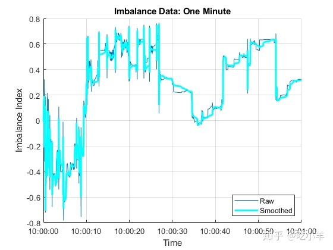

Home
本示例创建了限价订单（LOB）动力学的连续时间马尔可夫模型，并根据数据中观察到的模式开发了用于算法交易的策略。它是有关用于统计套利的机器学习的一系列相关示例的一部分（请参阅机器学习应用程序）。
探索性数据分析
要预测系统的未来行为，您需要发现历史数据中的模式。纳斯达克等交易所提供的大量数据在提供统计机会的同时，也给计算带来了挑战。该示例遵循 [4]的方法，通过寻找价格动能指标来探索LOB数据。
原始数据
加载LOBVars.matNASDAQ证券INTC的LOB预处理数据集。
load LOBVars数据集包含每个订单的以下信息：到达时间t（从午夜开始的秒数），1级要价MOAsk，1级竞标价格MOBid，中间价 S和失衡指数I。
创建一个图表，显示LOB不平衡指数I和中间价的日内演变S。
figure
?
t.Format = "hh:mm:ss";
?
yyaxis left
plot(t,I)
ylabel("Imbalance Index")
?
yyaxis right
plot(t,S/10000,'LineWidth',2)
ylabel("Midprice (Dollars)")
?
xlabel("Time")
?
title('Exchange Data: One Day')
legend(["Imbalance","Midprice"],'Location','NE')
grid on在这种规模下，失衡指数无法表明中间价格的未来变化。
要查看更多详细信息，请将时间标度限制为一分钟。
timeRange = seconds([36000 36060]); % One minute after 10 AM, when prices were climbing
xlim(timeRange)
legend('Location','SE')
title("Exchange Data: One Minute")在这种尺度下，失衡指数的急剧偏离与中间价格的相应偏离一致。如果这种关系是可预测的，则意味着一定规模的失衡可以预测未来的价格走势，那么对该关系进行量化可以提供统计套利机会。
在LOB中绘制间隔时间的直方图。
DT = diff(t); % Interarrival Times
DT.Format = "s";
?
figure
binEdges = seconds(0.01:0.01:1);
histogram(DT,binEdges)
xlabel("Seconds")
ylabel("Number of Orders")
title("LOB Interarrival Times")间隔时间遵循泊松过程的特征模式。
通过将指数分布拟合到间隔时间来计算订单之间的平均等待时间。
DTAvg = expfit(DT)
DTAvg = duration
0.040273 sec平滑数据
原始不平衡序列I不稳定。要识别最重要的动态变化，请引入平滑度dI，该平滑度是用于平均原始不平衡序列的后向标记的数量。
dI = 10; % Hyperparameter
dTI = dI*DTAvg
dTI = duration
0.40273 sec该设置对应于10个标记的间隔，或平均约0.4秒。在后续窗口中平滑不平衡指数。
sI = smoothdata(I,'movmean',[dI 0]);可视化平滑程度以评估丢失或保留的波动率。
figure
hold on
plot(t,I)
plot(t,sI,'c','LineWidth',2)
hold off
?
xlabel("Time")
xlim(timeRange)
ylabel("Imbalance Index")
title("Imbalance Data: One Minute")
legend(["Raw","Smoothed"],'Location','SE')
grid on
离散数据
要创建动力学的马尔可夫模型，请将平滑的不平衡指数收集sI放到分组中，将其离散化为有限的状态集合rho（ρ）。分组数numBins是一个超参数。
numBins = 3; % Hyperparameter
binEdges = linspace(-1,1,numBins+1);
rho = discretize(sI,binEdges);要对预测效果进行建模，请在先导窗口中汇总价格。窗口中的间隔数dS是一个超参数。
dS = 20; % Hyperparameter
dTS = dS*DTAvg
dTS = duration
0.80547 sec该设置对应于20个间隔，或平均约0.8秒。将价格变动离散化为由远期价格变动的符号给出的三个状态DS（ΔS）。
DS = NaN(size(S));
shiftS = S(dS+1:end);
DS(1:end-dS) = sign(shiftS-S(1:end-dS));可视化离散化数据。
figure
?
subplot(3,1,1)
hold on
plot(t,sI,'c','LineWidth',2)
for i = 2:numBins
yline(binEdges(i),'b--');
end
hold off
xlim(timeRange)
ylim([-1 1])
yticks(binEdges)
title("Imbalance Index (Smoothed)")
grid on
?
subplot(3,1,2)
plot(t,rho,'co','MarkerSize',3)
xlim(timeRange)
ylim([1 numBins])
yticks(1:numBins)
ylabel("\rho")
title("Imbalance Index (Discretized)")
grid on
?
subplot(3,1,3)
plot(t,DS,'ro','MarkerSize',3)
xlim(timeRange)
ylim([-1 1])
yticks([-1 0 1])
ylabel("\DeltaS")
title("Price Movement")
grid on连续时间马尔可夫过程
总而言之，LOB不平衡指数的状态rho（ρ）和远期价格走势的状态DS（ΔS）描述了二维连续时间马尔可夫链（CTMC）。该链由订单到达的泊松过程调制，该过程指示状态之间的任何转换。
为了简化说明，为二维CTMC提供一维编码成状态phi（φ =（ρ ，ΔS））。
numStates = 3*numBins; % numStates(DS)*numStates(rho)
?
phi = NaN(size(t));
for i = 1:length(t)
switch DS(i)
case -1
phi(i) = rho(i);
case 0
phi(i) = rho(i) + numBins;
case 1
phi(i) = rho(i) + 2*numBins;
end
end连续状态 φ，以及组件状态 ρ 和 ΔS， 进行如下操作。
超参数dI和dS确定表征动力学的滚动状态的大小。在时间 t，过程从 φ =(ρ**previous,ΔS**current)=i 至 φ =(ρ**current,ΔS**future)=j （如果 i = j，保持相同的状态）。
估计过程参数
在任何时间 t执行交易策略是基于 ΔS**future处于特定状态，以其他状态的当前值和先前值为条件。根据[3]和[4]，确定经验转移概率，然后评估它们的预测能力。
% Transition counts
?
C = zeros(numStates);
for i = 1:length(phi)-dS-1
C(phi(i),phi(i+1)) = C(phi(i),phi(i+1))+1;
end
?
% Holding times
?
H = diag(C);
?
% Transition rate matrix (infinitesimal generator)
?
G = C./H;
v = sum(G,2);
G = G + diag(-v);
?
% Transition probability matrix (stochastic for all dI)
?
P = expm(G*dI); % Matrix exponential如文献 [4]所述，为了获得包含概率：
的交易矩阵呢 Q，应用贝叶斯法则：
分子是转移概率矩阵P。计算分母PCond.
PCond = zeros(size(P));
phiNums = 1:numStates;
modNums = mod(phiNums,numBins);
for i = phiNums
for j = phiNums
idx = (modNums == modNums(j));
PCond(i,j) = sum(P(i,idx));
end
end
?
Q = P./PCond;Q在表格中显示。用复合状态φ=(ρ,ΔS)标记行和列。
binNames = string(1:numBins);
stateNames = ["("+binNames+",-1)","("+binNames+",0)","("+binNames+",1)"];
QTable = array2table(Q,'RowNames',stateNames,'VariableNames',stateNames)
QTable=9×9 table
(1,-1) (2,-1) (3,-1) (1,0) (2,0) (3,0) (1,1) (2,1) (3,1)
________ _________ _________ _______ _______ _______ _________ _________ ________
?
(1,-1) 0.59952 0.30458 0.19165 0.39343 0.67723 0.7099 0.0070457 0.018196 0.098447
(2,-1) 0.74092 0.58445 0.40023 0.25506 0.41003 0.56386 0.0040178 0.0055189 0.035914
(3,-1) 0.79895 0.60866 0.55443 0.19814 0.385 0.42501 0.0029096 0.0063377 0.020554
(1,0) 0.094173 0.036014 0.019107 0.88963 0.91688 0.75192 0.016195 0.047101 0.22897
(2,0) 0.12325 0.017282 0.015453 0.86523 0.96939 0.9059 0.011525 0.013328 0.078648
(3,0) 0.1773 0.02616 0.018494 0.81155 0.95359 0.92513 0.011154 0.020252 0.056377
(1,1) 0.041132 0.0065127 0.0021313 0.59869 0.39374 0.21787 0.36017 0.59975 0.78
(2,1) 0.059151 0.0053554 0.0027769 0.65672 0.42325 0.26478 0.28413 0.5714 0.73244
(3,1) 0.095832 0.010519 0.0051565 0.7768 0.6944 0.3906 0.12736 0.29508 0.60424
figure
imagesc(Q)
axis equal tight
hCB = colorbar;
hCB.Label.String = "Prob(\DeltaS_{future} | \rho_{previous},\rho_{current},\DeltaS_{current})";
xticks(phiNums)
xticklabels(stateNames)
xlabel("(\rho_{current},\DeltaS_{future})")
yticks(phiNums)
yticklabels(stateNames)
ylabel("(\rho_{previous},\DeltaS_{current})")
title("Trading Matrix")
trigger = 0.5;
QPattern = (Q > trigger)
QPattern = 9x9 logical array
?
1 0 0 0 1 1 0 0 0
1 1 0 0 0 1 0 0 0
1 1 1 0 0 0 0 0 0
0 0 0 1 1 1 0 0 0
0 0 0 1 1 1 0 0 0
0 0 0 1 1 1 0 0 0
0 0 0 1 0 0 0 1 1
0 0 0 1 0 0 0 1 1
0 0 0 1 1 0 0 0 1是交易策略吗？
Q基于可用的交换数据和超参数设置构建。使用Q，以便让未来的交易决策取决于市场统计模式的连续型。市场在某些状态下是否表现出动力，是对弱形式的有效市场假说（EMH）的检验。对于大量交易的资产，例如本示例 (INTC)中使用的资产，EMH可能会长期持有，套利机会很快消失。但是，失效的EMH可能会在短时间内出现在某些资产中。使用最佳超参数设置和要进行交易的验证期，有效的交易策略将交易日的一部分（足够短以显示一定程度的统计平衡）划分为一个训练期，以进行估算Q。
概要
本示例从LOB上的原始数据开始，然后将其转换为统计套利机会的概要矩阵Q。该分析使用连续时间马尔可夫链模型的数学方法，首先是识别LOB到达时间的泊松过程，然后将数据离散化为代表市场瞬时位置的二维状态。根据经验得出的状态转换的描述导致了算法交易策略的可能性。
参考文献
[1] Cartea, álvaro, Sebastian Jaimungal, and Jason Ricci. "Buy Low, Sell High: A High-Frequency Trading Perspective." SIAM Journal on Financial Mathematics 5, no. 1 (January 2014): 415–44. https://doi.org/10.1137/130911196.
[2] Guilbaud, Fabien, and Huyen Pham. "Optimal High-Frequency Trading with Limit and Market Orders." Quantitative Finance 13, no. 1 (January 2013): 79–94. https://doi.org/10.1080/14697688.2012.708779.
[3] Norris, J. R. Markov Chains. Cambridge, UK: Cambridge University Press, 1997.
[4] Rubisov, Anton D. "Statistical Arbitrage Using Limit Order Book Imbalance." Master's thesis, University of Toronto, 2015.
注：本文根据MATLAB官网内容修改而成。
======================================================================
我的测试结果及程序
下面是我测试的代码：